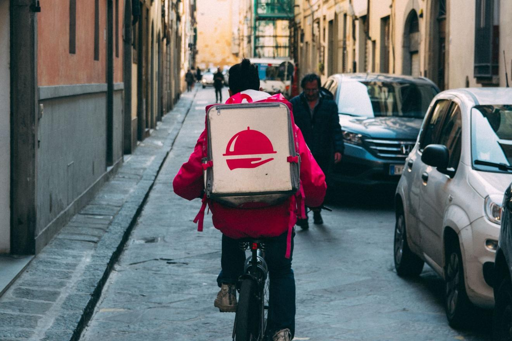

The Food Delivery Industry Is Changing the Way We Think About Food

The food industry is being transformed into a delivery business due to greater emphasis on convenience and quality of life above other concerns. However, it will need to shift to accommodate more eaters with less money over time.
FRESH AND FAST, ABOVE ALL
With more families supported by working parents and younger, single people favoring convenience above all else, eating efficiently is becoming the ultimate goal during the dinner hour — and beyond. But this doesn’t mean that consumers aren’t concerned about healthful foods; in fact, modern convenience food buyers are looking for more quality and convenience, and are paying more to get them.
Scott Mushkin, lead food trends researcher at Wolfe Research, told Successful Farming in 2016, “Local and fresh is in; processed is out. That trend has spread throughout every age and income bracket in just the last two years.”
This has led to the rise of various food delivery entrepreneurs and startups. These companies are working to offer consumers meals in a context that provides more choice, improved quality, a high level of transparency, and, above all else, convenience. Startups like Blue Apron, Plated, Hello Fresh, and Green Chef deliver everything you need to make complete, healthy meals in a box. Other services that vary from city to city provide actual freshly prepared meals ready to eat—up to five times a day, if you want them.
None of these options are cheap, but that’s not their selling point. All Blue Apron or Hello Fresh, for example, must convince you of is that you do not need to shop, spend money on groceries, or spend time prepping to cook. If the price they charge is worth your time spent on those activities, plus the cost of the food, they’ve got you.
Companies like London’s Everdine cook fresh meals and flash freeze them, giving you the best of both worlds, in a sense: food that tastes freshly prepared, but only when you want it.
It’s no coincidence that this trend is being driven by millennials, a group that values quality of life more highly than any modern generation before it. Mushkin commented to Agriculture.com: “Millennials have come of age. Their changing food preferences are being heard.”
Mushkin commented that for these new consumers, transparency is paramount. “It’s a hot-button issue. In our focus groups with young women, they want to know where their food comes from. The actual source. The family farm still has great appeal with them. Now they want to know the story behind the food. If it’s a family farm story, that’s a very good thing.”
FOOD ACCESSIBILITY AND HEALTH
According to Mushkin’s research, the overarching market trend toward healthy, fresh, local food is seen in every bracket—except the extreme lowest income, less than $25,000 a year. This is probably not based on lack of interest or concern, but lack of buying power and access. In fact, the current need for accessible, wholesome foods remains high, and this need will only grow as the population increases.
Although the percentage of the world living with undernourishment has dropped over time, there are still about 795 million people in the world – around one in nine people — who don’t get enough to eat. Sixty percent of them are female, and children by far are affected most by hunger. The problem is most acute in the developing world, and this will be exacerbated as the global population continues to grow.
Food startups like Everdine and Memphis Meats, a lab-grown meat startup that recently attracted the financial backing of Bill Gates and Richard Branson, have the opportunity to lead consumers toward more sustainable and nutritious eating patterns. These startups also have the potential to reach everybody – not just those who can afford to the time and money it takes to acquire the highest quality ingredients in the existing market. As everyday people become more concerned about health, the impact food has on health and longevity, and sustainability, they will have more demands for food startups. These companies will need to meet these demands to stay competitive.
Source: Karla LantImage Credit: Jill 1 1 1/PixabayCover photo: Kai Pilger